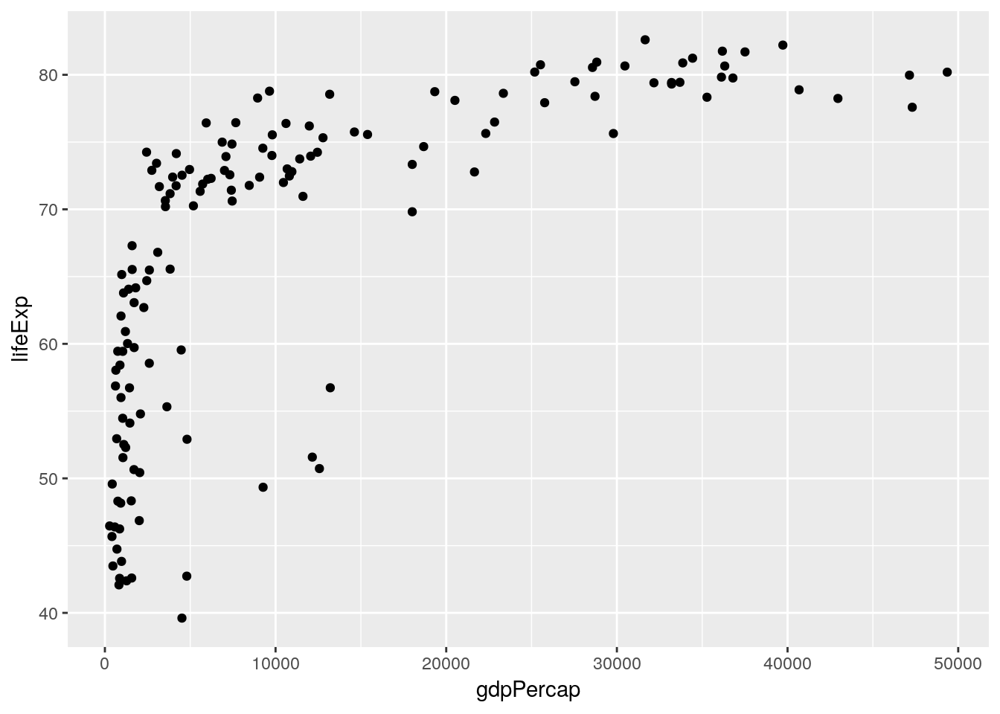
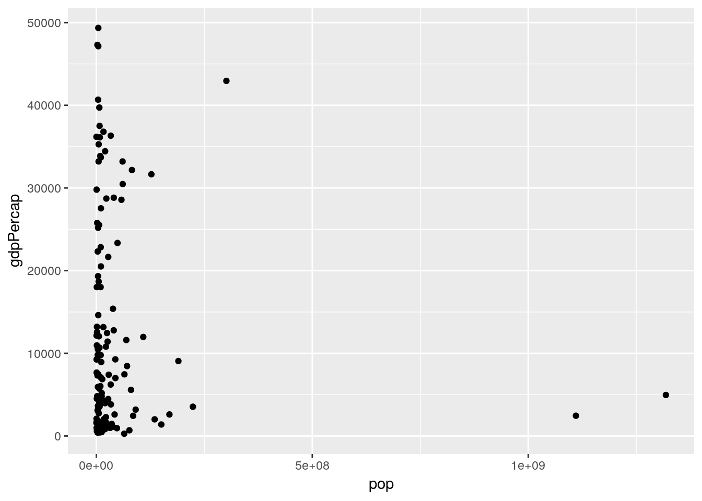
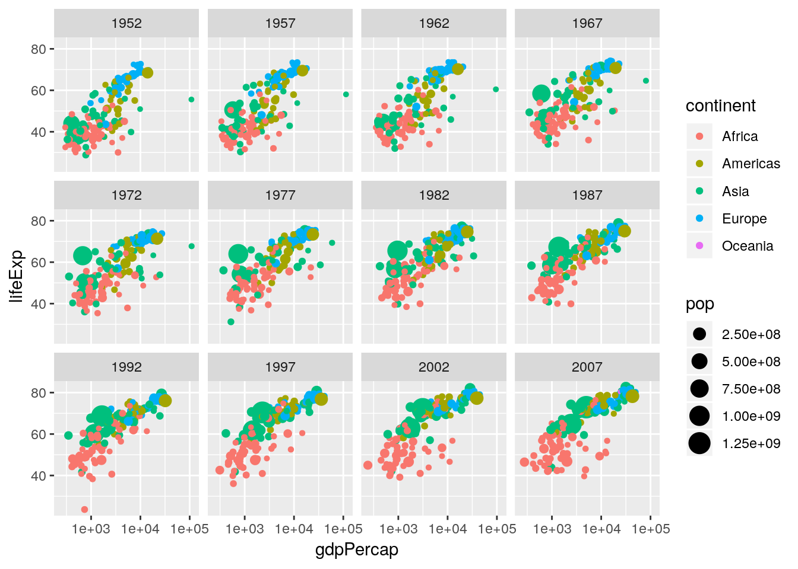
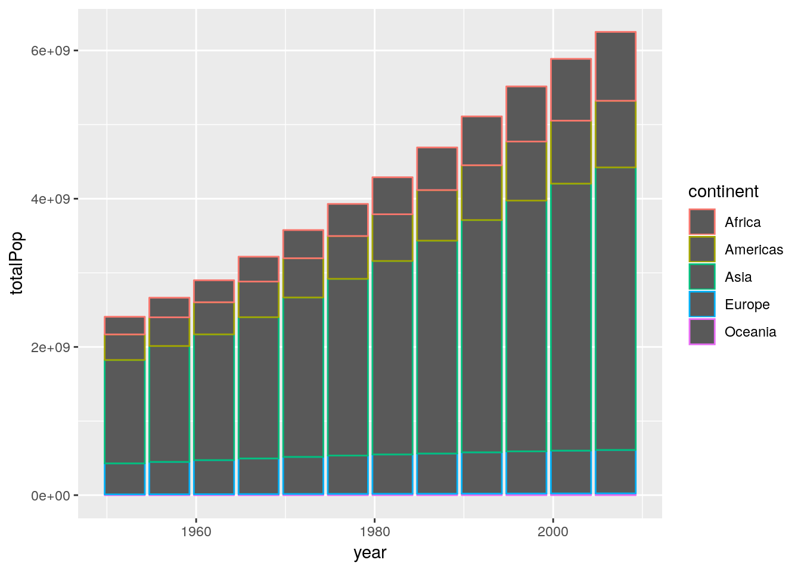
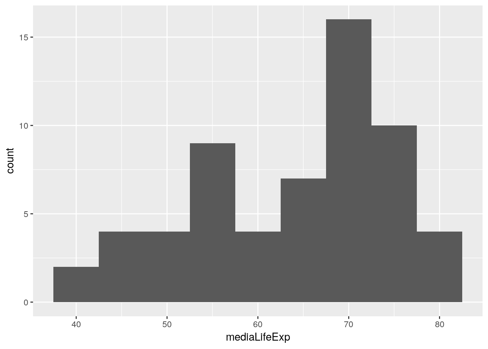
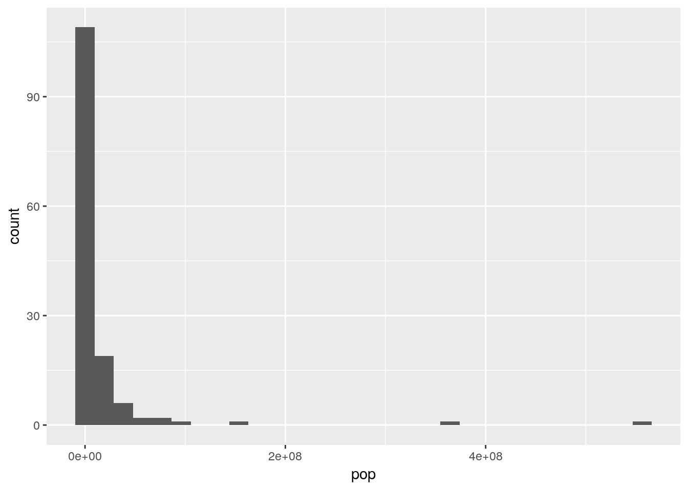
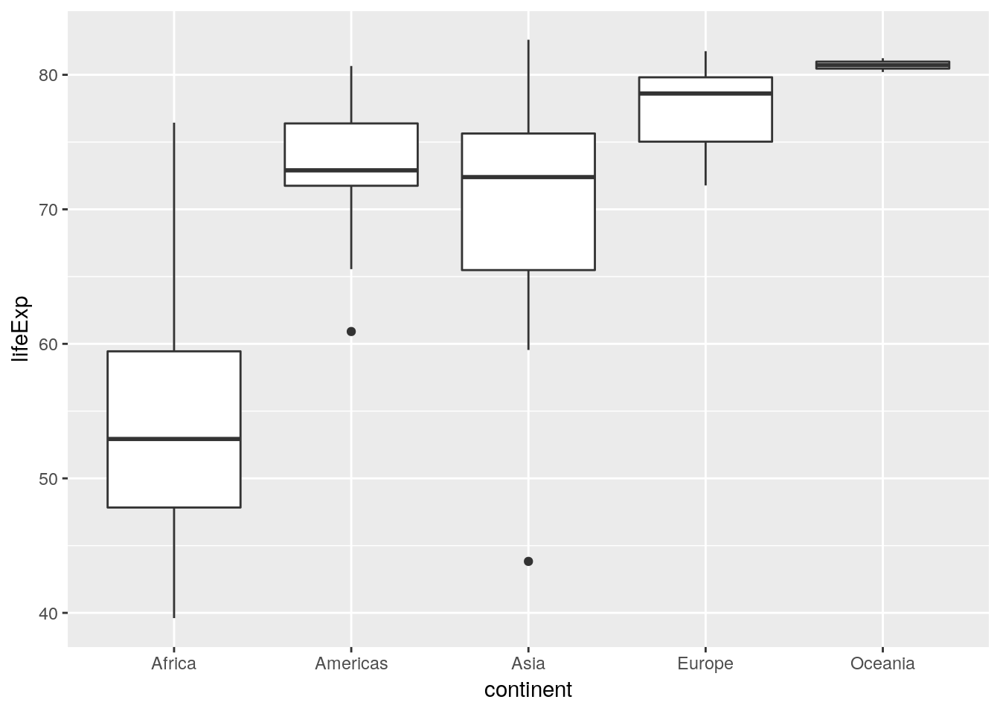

1 Introduction to the Tidyverse

Estas anotações são do curso do DataCamp Intrudução ao Tidyverse, ministrado todo em inglês pelo David Robinson.
Para dicas em inglês sobre o tidyverse, veja o pdf abaixo. Os slides em inglês das aulas desse primeiro capítulo estão a seguir.

Slides do primeiro capítulo em inglês
1.1 Data Wrangling
Utilizaremos os dados da biblioteca do Gapminder, um ótimo site com dados socio-econômicos mundias. Também estaremos utilizando a biblioteca dplyr, que serve como uma fonte gramática para os textos progamáticos que estaremos escrevendo. dplyr fornecerar verbos que facilitarão a nossa escrita dos algorítmos a seguir.
library(gapminder)
library(dplyr)##
## Attaching package: 'dplyr'## The following objects are masked from 'package:stats':
##
## filter, lag## The following objects are masked from 'package:base':
##
## intersect, setdiff, setequal, unionAo rodar o código acima, nota-se que um aviso aparece dizendo que certas funções foram mascaradas. Isso significa ao chamar os pacotes, existiam funções com o mesmo nome do que as que já foram carregdas, e que essas mais recentes serão utilizadas pois aparecem primeiro na ordem de chamada do R. Pode er mais sobre isso em português no Scoping Rules - Symbol Binding
# Para verificar a ordem atual basta rodar a linha abaixo:
search()## [1] ".GlobalEnv" "package:dplyr" "package:gapminder"
## [4] "package:stats" "package:graphics" "package:grDevices"
## [7] "package:utils" "package:datasets" "package:methods"
## [10] "Autoloads" "package:base"Abaixo uma visão exploratória dos dados que utilizaremos
gapminder## # A tibble: 1,704 x 6
## country continent year lifeExp pop gdpPercap
## <fct> <fct> <int> <dbl> <int> <dbl>
## 1 Afghanistan Asia 1952 28.8 8425333 779.
## 2 Afghanistan Asia 1957 30.3 9240934 821.
## 3 Afghanistan Asia 1962 32.0 10267083 853.
## 4 Afghanistan Asia 1967 34.0 11537966 836.
## 5 Afghanistan Asia 1972 36.1 13079460 740.
## 6 Afghanistan Asia 1977 38.4 14880372 786.
## 7 Afghanistan Asia 1982 39.9 12881816 978.
## 8 Afghanistan Asia 1987 40.8 13867957 852.
## 9 Afghanistan Asia 1992 41.7 16317921 649.
## 10 Afghanistan Asia 1997 41.8 22227415 635.
## # … with 1,694 more rowsstr(gapminder)## Classes 'tbl_df', 'tbl' and 'data.frame': 1704 obs. of 6 variables:
## $ country : Factor w/ 142 levels "Afghanistan",..: 1 1 1 1 1 1 1 1 1 1 ...
## $ continent: Factor w/ 5 levels "Africa","Americas",..: 3 3 3 3 3 3 3 3 3 3 ...
## $ year : int 1952 1957 1962 1967 1972 1977 1982 1987 1992 1997 ...
## $ lifeExp : num 28.8 30.3 32 34 36.1 ...
## $ pop : int 8425333 9240934 10267083 11537966 13079460 14880372 12881816 13867957 16317921 22227415 ...
## $ gdpPercap: num 779 821 853 836 740 ...1.1.1 O verbo filtro: filter()
Utilizamos filter() quando queremos obter um subconjunto dos dados. Quando formos utilizar um verbo, sempre utilizamos um cano (pipe) %>%. Esse cano irá puxar o dado que vem antes e passar ele pelo verbo filtro.
# Abaixo estamos filtrando pelo ano 2007
gapminder %>%
filter(year == 2007)## # A tibble: 142 x 6
## country continent year lifeExp pop gdpPercap
## <fct> <fct> <int> <dbl> <int> <dbl>
## 1 Afghanistan Asia 2007 43.8 31889923 975.
## 2 Albania Europe 2007 76.4 3600523 5937.
## 3 Algeria Africa 2007 72.3 33333216 6223.
## 4 Angola Africa 2007 42.7 12420476 4797.
## 5 Argentina Americas 2007 75.3 40301927 12779.
## 6 Australia Oceania 2007 81.2 20434176 34435.
## 7 Austria Europe 2007 79.8 8199783 36126.
## 8 Bahrain Asia 2007 75.6 708573 29796.
## 9 Bangladesh Asia 2007 64.1 150448339 1391.
## 10 Belgium Europe 2007 79.4 10392226 33693.
## # … with 132 more rows# e agora por país
gapminder %>%
filter(country == "Brazil")## # A tibble: 12 x 6
## country continent year lifeExp pop gdpPercap
## <fct> <fct> <int> <dbl> <int> <dbl>
## 1 Brazil Americas 1952 50.9 56602560 2109.
## 2 Brazil Americas 1957 53.3 65551171 2487.
## 3 Brazil Americas 1962 55.7 76039390 3337.
## 4 Brazil Americas 1967 57.6 88049823 3430.
## 5 Brazil Americas 1972 59.5 100840058 4986.
## 6 Brazil Americas 1977 61.5 114313951 6660.
## 7 Brazil Americas 1982 63.3 128962939 7031.
## 8 Brazil Americas 1987 65.2 142938076 7807.
## 9 Brazil Americas 1992 67.1 155975974 6950.
## 10 Brazil Americas 1997 69.4 168546719 7958.
## 11 Brazil Americas 2002 71.0 179914212 8131.
## 12 Brazil Americas 2007 72.4 190010647 9066.# podemos fazer isso para múltiplos prâmetros
gapminder %>%
filter(year == 2007, country == "Brazil")## # A tibble: 1 x 6
## country continent year lifeExp pop gdpPercap
## <fct> <fct> <int> <dbl> <int> <dbl>
## 1 Brazil Americas 2007 72.4 190010647 9066.1.1.2 O verbo arranjar: arrange()
O verbo arrange reordena as observações de uma base de dados de forma ascendente ou descendente (default) com base em um dos seus parâmetros.
# Ascendente
gapminder %>%
arrange(gdpPercap)## # A tibble: 1,704 x 6
## country continent year lifeExp pop gdpPercap
## <fct> <fct> <int> <dbl> <int> <dbl>
## 1 Congo, Dem. Rep. Africa 2002 45.0 55379852 241.
## 2 Congo, Dem. Rep. Africa 2007 46.5 64606759 278.
## 3 Lesotho Africa 1952 42.1 748747 299.
## 4 Guinea-Bissau Africa 1952 32.5 580653 300.
## 5 Congo, Dem. Rep. Africa 1997 42.6 47798986 312.
## 6 Eritrea Africa 1952 35.9 1438760 329.
## 7 Myanmar Asia 1952 36.3 20092996 331
## 8 Lesotho Africa 1957 45.0 813338 336.
## 9 Burundi Africa 1952 39.0 2445618 339.
## 10 Eritrea Africa 1957 38.0 1542611 344.
## # … with 1,694 more rows# Descendente
gapminder %>%
arrange(desc(gdpPercap))## # A tibble: 1,704 x 6
## country continent year lifeExp pop gdpPercap
## <fct> <fct> <int> <dbl> <int> <dbl>
## 1 Kuwait Asia 1957 58.0 212846 113523.
## 2 Kuwait Asia 1972 67.7 841934 109348.
## 3 Kuwait Asia 1952 55.6 160000 108382.
## 4 Kuwait Asia 1962 60.5 358266 95458.
## 5 Kuwait Asia 1967 64.6 575003 80895.
## 6 Kuwait Asia 1977 69.3 1140357 59265.
## 7 Norway Europe 2007 80.2 4627926 49357.
## 8 Kuwait Asia 2007 77.6 2505559 47307.
## 9 Singapore Asia 2007 80.0 4553009 47143.
## 10 Norway Europe 2002 79.0 4535591 44684.
## # … with 1,694 more rows1.1.3 Utilizando mais de um verbo
Aqui utilizaremos uma série de canalização, passando os dados pelo primeiro filtramos os dados que queremos, depois, passando pelo segundo encanamento, ordenamos os dados de acordo com o parâmetro de nossa escolha.
gapminder %>%
filter(year == 2007) %>%
arrange(desc(gdpPercap))## # A tibble: 142 x 6
## country continent year lifeExp pop gdpPercap
## <fct> <fct> <int> <dbl> <int> <dbl>
## 1 Norway Europe 2007 80.2 4627926 49357.
## 2 Kuwait Asia 2007 77.6 2505559 47307.
## 3 Singapore Asia 2007 80.0 4553009 47143.
## 4 United States Americas 2007 78.2 301139947 42952.
## 5 Ireland Europe 2007 78.9 4109086 40676.
## 6 Hong Kong, China Asia 2007 82.2 6980412 39725.
## 7 Switzerland Europe 2007 81.7 7554661 37506.
## 8 Netherlands Europe 2007 79.8 16570613 36798.
## 9 Canada Americas 2007 80.7 33390141 36319.
## 10 Iceland Europe 2007 81.8 301931 36181.
## # … with 132 more rows1.1.4 O verbo mutar: mutate()
Supomos que queiro alterar ou adicionar uma variável/parâmetro do banco de dados, para isso utilizaremos mutate().
# População será alterado para população / 1000000
gapminder %>%
mutate(pop = pop / 1000000)## # A tibble: 1,704 x 6
## country continent year lifeExp pop gdpPercap
## <fct> <fct> <int> <dbl> <dbl> <dbl>
## 1 Afghanistan Asia 1952 28.8 8.43 779.
## 2 Afghanistan Asia 1957 30.3 9.24 821.
## 3 Afghanistan Asia 1962 32.0 10.3 853.
## 4 Afghanistan Asia 1967 34.0 11.5 836.
## 5 Afghanistan Asia 1972 36.1 13.1 740.
## 6 Afghanistan Asia 1977 38.4 14.9 786.
## 7 Afghanistan Asia 1982 39.9 12.9 978.
## 8 Afghanistan Asia 1987 40.8 13.9 852.
## 9 Afghanistan Asia 1992 41.7 16.3 649.
## 10 Afghanistan Asia 1997 41.8 22.2 635.
## # … with 1,694 more rows# Abaixo criamos a variável gdp (a nova variável não pode conter espaços no nome)
gapminder %>%
mutate(gdp = gdpPercap * pop)## # A tibble: 1,704 x 7
## country continent year lifeExp pop gdpPercap gdp
## <fct> <fct> <int> <dbl> <int> <dbl> <dbl>
## 1 Afghanistan Asia 1952 28.8 8425333 779. 6567086330.
## 2 Afghanistan Asia 1957 30.3 9240934 821. 7585448670.
## 3 Afghanistan Asia 1962 32.0 10267083 853. 8758855797.
## 4 Afghanistan Asia 1967 34.0 11537966 836. 9648014150.
## 5 Afghanistan Asia 1972 36.1 13079460 740. 9678553274.
## 6 Afghanistan Asia 1977 38.4 14880372 786. 11697659231.
## 7 Afghanistan Asia 1982 39.9 12881816 978. 12598563401.
## 8 Afghanistan Asia 1987 40.8 13867957 852. 11820990309.
## 9 Afghanistan Asia 1992 41.7 16317921 649. 10595901589.
## 10 Afghanistan Asia 1997 41.8 22227415 635. 14121995875.
## # … with 1,694 more rows1.2 Data Visualization
Utilizaremos o pacote ggplot2 em conjunto com dplyr para gerar gráficos. Para gerar as visualizações das informações que achamos interessante, primeiro precisamos de aplicar a nossa manipulação dos dados a uma variável, como a seguir:
gapminder_2007 <- gapminder %>%
filter(year == 2007)
gapminder_2007## # A tibble: 142 x 6
## country continent year lifeExp pop gdpPercap
## <fct> <fct> <int> <dbl> <int> <dbl>
## 1 Afghanistan Asia 2007 43.8 31889923 975.
## 2 Albania Europe 2007 76.4 3600523 5937.
## 3 Algeria Africa 2007 72.3 33333216 6223.
## 4 Angola Africa 2007 42.7 12420476 4797.
## 5 Argentina Americas 2007 75.3 40301927 12779.
## 6 Australia Oceania 2007 81.2 20434176 34435.
## 7 Austria Europe 2007 79.8 8199783 36126.
## 8 Bahrain Asia 2007 75.6 708573 29796.
## 9 Bangladesh Asia 2007 64.1 150448339 1391.
## 10 Belgium Europe 2007 79.4 10392226 33693.
## # … with 132 more rowsPara criar as nossas visualizações com ggplot2, precisamos primeiro puxar a sua biblioteca:
library(ggplot2)Agora criaremos um gráfico de dispersão com os dados de expectativa de vida e PIB per capita, para fazer uma analise exploratória de correlação entre esses dois parâmetros.
# O primeiro argumento é a base de dados, seguido pelo aes que é a base estética do gráfico, onde alocamos quais dados queremos e em quais dimensões serão aplicados.
# Depois do "+" chamamos o tipo de gráfico que queremos, isso adiciona uma camada ao gráfico com determinada visualização. O "geom" significa que estamos adicionando uma camada geométrica ao gráfico, o ponto indica que cada observação é representado por um ponto.
ggplot(gapminder_2007, aes(x = gdpPercap, y = lifeExp)) +
geom_point()
Algúns dados não são bem representados em gráficos em sua forma bruta, tendo muitas das observações, por exemplo, encolhidas na esquerda como no gráfico acima e no exemplo abaixo. No gráfico abaixo, é difícil de tirar conclusões sobre a relação entre PIB per capita e população.
ggplot(gapminder_2007, aes(x = pop, y = gdpPercap)) +
geom_point() Isso ocorre devido as diferenças nas ordens de grandezas dos dados. Isso pode ser corrigido com uma escala logarítmica onde as distâncias entre as observações se mantem constante para uma mesma variação da proporção entre eles. Isso pode ser feito facilmente colocando mais uma camada ao gráfico.
# Para o primeiro gráfico temos
ggplot(gapminder_2007, aes(x = gdpPercap, y = lifeExp)) +
geom_point() +
scale_x_log10()# Para o segundo temos
ggplot(gapminder_2007, aes(x = pop, y = lifeExp)) +
geom_point() +
scale_x_log10() +
scale_y_log10()Observamos claramente então que não existe correlação entre a população e expectativa de vida, porém existe entre isso e Pib per capita.
1.2.1 Cor e Tamanho
Um bom jeito de explicitar categorias em gráficos é aplicando cores. Faremos isso para demarcar os continente relativos a cada observação nos dados abaixo. A legenda é criada automaticamente.
ggplot(gapminder_2007, aes(x = gdpPercap, y = lifeExp, color = continent)) +
geom_point() +
scale_x_log10()Podemos melhorar a visualização colocando mais informações de forma sutil. Faremos isso adicionando informação sobre o tamanho da população ao gráfico sendo representado pelo tamanho do ponto a seguir. Colocamos o argumento para o tamanho numa linha separada para deixar o código mais fácil de ser lido por um humano.
ggplot(gapminder_2007, aes(x = gdpPercap, y = lifeExp, color = continent,
size = pop)) +
geom_point() +
scale_x_log10()Vemos que apesar de não existir correlação entre as duas variáveis o gráfico nos permite encontrar que países africanos se agrupam mais numa região de baixa expectativa de vida e países europeus em uma região com maior expectativa de vida. Isso seria uma informação muito útil , junto à falta de correlação, se não tivessemos obtido tais informações anteriormente.
ggplot(gapminder_2007, aes(x = pop, y = lifeExp, color = continent)) +
geom_point() +
scale_x_log10()1.2.2 Faceting, facetando
É possível dividir um gráfico em várias faces de acordo com um parâmetro, gerando subgráficos de um gráfico originário. Fazemos isso adicionando mais uma camada ao gráfico. Geralmente em R,
ggplot(gapminder_2007, aes(x = gdpPercap, y = lifeExp, color = continent,
size = pop)) +
geom_point() +
scale_x_log10() +
facet_wrap(~ continent) Podemos expandir a nossa análise e verificar as mesmas informações para todos os anos.
Podemos expandir a nossa análise e verificar as mesmas informações para todos os anos.
ggplot(gapminder, aes(x = gdpPercap, y = lifeExp, color = continent,
size = pop)) +
geom_point() +
scale_x_log10() +
facet_wrap(~ year) Podemos observar uma leve tendência para cima e para a direita, representando um Pib per capita e uma expectativa de vida maior ao longo do tempo numa escala mundial.
1.2.3 O verbo de resumir: summarize() ou summarise()
Tal verbo transforma um parâmetro em um ponto de dado, resumindo as informações de todos os dados das observações abaixo, por exemplo, numa média.
gapminder %>%
summarize(mediaLifeExp = mean(lifeExp))## # A tibble: 1 x 1
## mediaLifeExp
## <dbl>
## 1 59.5Podemos fazer uma análise para um ano em particular, que deve fazer mais sentido que olhar a média de todos os países e todos os anos. Podemos resumir mais de uma observação de uma só vez também.
gapminder %>%
filter(year == 2007) %>%
summarize(mediaLifeExp = mean(lifeExp), totalPop = sum(as.numeric(pop)))## # A tibble: 1 x 2
## mediaLifeExp totalPop
## <dbl> <dbl>
## 1 67.0 62510131791.2.4 O verbo de agrupar: group_by()
E se quisermos ver o resumo de vários grupos de dados como, por exemplo, para cada ano? Podemos utilizar o verbo grou_by() para isso. É o mesmo que filter, porém ao invés de puxar os dados e criar um agrupamento, esse cria vários baseados num parâmetro.
gapminder %>%
group_by(year) %>%
summarize(mediaLifeExp = mean(lifeExp), totalpop = sum(as.numeric(pop)))## # A tibble: 12 x 3
## year mediaLifeExp totalpop
## <int> <dbl> <dbl>
## 1 1952 49.1 2406957150
## 2 1957 51.5 2664404580
## 3 1962 53.6 2899782974
## 4 1967 55.7 3217478384
## 5 1972 57.6 3576977158
## 6 1977 59.6 3930045807
## 7 1982 61.5 4289436840
## 8 1987 63.2 4691477418
## 9 1992 64.2 5110710260
## 10 1997 65.0 5515204472
## 11 2002 65.7 5886977579
## 12 2007 67.0 6251013179Podemos utilizar ambos filtro e group_by para selecionar uma característica em particular, dividir os dados com essa característica em grupos e resumir cada um.
por_continente_2007<- gapminder %>%
filter(year == 2007) %>%
group_by(continent) %>%
summarize(mediaLifeExp = mean(lifeExp), totalPop = sum(as.numeric(pop)))
por_continente_2007## # A tibble: 5 x 3
## continent mediaLifeExp totalPop
## <fct> <dbl> <dbl>
## 1 Africa 54.8 929539692
## 2 Americas 73.6 898871184
## 3 Asia 70.7 3811953827
## 4 Europe 77.6 586098529
## 5 Oceania 80.7 24549947Tendo essa tabela, talvez esteja curioso sobre como fazer uma para cada ano? Podemos fazer isso escolhendo agrupar por ano e continente. Ou seja, primeiro as observações são agrupadas pelo primeiro parâmetro e dentro desse agrupamento, são agrupados pelo segundo.
gapminder %>%
group_by(year, continent) %>%
summarize(mediaLifeExp = mean(lifeExp), totalpop = sum(as.numeric(pop)))## # A tibble: 60 x 4
## # Groups: year [12]
## year continent mediaLifeExp totalpop
## <int> <fct> <dbl> <dbl>
## 1 1952 Africa 39.1 237640501
## 2 1952 Americas 53.3 345152446
## 3 1952 Asia 46.3 1395357351
## 4 1952 Europe 64.4 418120846
## 5 1952 Oceania 69.3 10686006
## 6 1957 Africa 41.3 264837738
## 7 1957 Americas 56.0 386953916
## 8 1957 Asia 49.3 1562780599
## 9 1957 Europe 66.7 437890351
## 10 1957 Oceania 70.3 11941976
## # … with 50 more rows1.2.5 Visualizando dados resumidos
Os três passos ggplot: 1. Os dados 1. A estética (x,y) 1. O tipo de gráfico
por_ano <- gapminder %>%
group_by(year) %>%
summarize(mediaLifeExp = mean(lifeExp), totalPop = sum(as.numeric(pop)))
ggplot(por_ano, aes(x = year, y = totalPop)) +
geom_point()O gráfico não representa muito bem a realiade dado não mostrar direito onde iniciou. Para revolver isso podemos adicionaro espaço abaixo dos dados. Boas práticas dizem que as informações num gráfico devem preencher 1/3 do espaço total.
ggplot(por_ano, aes(x = year, y = totalPop)) +
geom_point()+
expand_limits(y = 0)Podemos ver as tendências de todos os continentes também.
por_ano_continente <- gapminder %>%
group_by(year, continent) %>%
summarize(mediaLifeExp = mean(lifeExp), totalPop = sum(as.numeric(pop)))
ggplot(por_ano_continente, aes(x = year, y = totalPop, color = continent)) +
geom_point() +
expand_limits(y = 0)1.3 Tipos de visualização
Agora vamos expandir nos tipos de visualização que temos, que são bons para comparar estatísticas entre categorias. Faremos regressões, gráficos de barra, histogramas, etc.
1.3.1 Gráfico de linhas
Para fazer um gráfico de linha é só mudar geom_point para geom_line.
por_ano_continente <- gapminder %>%
group_by(year, continent) %>%
summarize(mediaLifeExp = mean(lifeExp), totalPop = sum(as.numeric(pop)))
ggplot(por_ano_continente, aes(x = year, y = totalPop, color = continent)) +
geom_line()1.3.2 Gráfico de Barras
Vamos ver como criar um gráfico de barras simples
# por_ano
ggplot(por_continente_2007, aes(x = continent, y = totalPop, color = continent)) +
geom_col()Que tal uma visualização que mostra a variação ao longo de vários anos e não apenas 2007
por_ano_continente <- gapminder %>%
group_by(year, continent) %>%
summarize(mediaLifeExp = mean(lifeExp), totalPop = sum(as.numeric(pop)))
ggplot(por_ano_continente, aes(x = year, y = totalPop, color = continent)) +
geom_col()
1.3.3 Histograma
Para os histograms, podemos deixar as bandas serem escolhidas pelo R, ou escolher o tamanho manualmente dentro do geom_histogram() com, por exemplo, geom_histogram(binwidth = 5). Nesse caso o tamanho das bandas são a quantidade de anos dentro de cada barra.
ggplot(por_ano_continente, aes(x = mediaLifeExp)) +
geom_histogram(binwidth = 5) Podemos também ter um olhar mais detalhado ao extratificado por continente.
ggplot(por_ano_continente, aes(x = mediaLifeExp, color = continent)) +
geom_histogram()## `stat_bin()` using `bins = 30`. Pick better value with `binwidth`.Quando os dados estão muito concentrados na esquerda, como abaixo, podemos utilizar uma escala logarítmica.
gapminder_1952 <- gapminder %>%
filter(year == 1952)
ggplot(gapminder_1952, aes(x = pop)) +
geom_histogram() ## `stat_bin()` using `bins = 30`. Pick better value with `binwidth`. Como podemos ver, isso resolve o problema
gapminder_1952 <- gapminder %>%
filter(year == 1952)
ggplot(gapminder_1952, aes(x = pop)) +
geom_histogram() +
scale_x_log10()## `stat_bin()` using `bins = 30`. Pick better value with `binwidth`.1.3.4 Gráfico de vela
Mostra as distribuições: máximos, mínimos, mediana, os pontos de outliers e o 25 percentile e 75 percentile (ou seja, metade da distribuição se localiza nessa caixa).
ggplot(gapminder_2007, aes(x = continent, y = lifeExp)) +
geom_boxplot()
1.3.5 Colocando um título
Adiciona-se uma camada com ggtitle("seu título")
ggplot(gapminder_2007, aes(x = continent, y = lifeExp)) +
geom_boxplot() +
ggtitle("seu título")